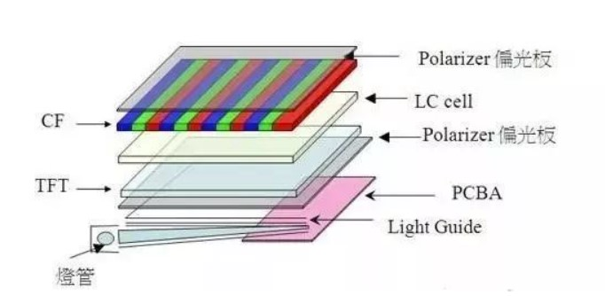
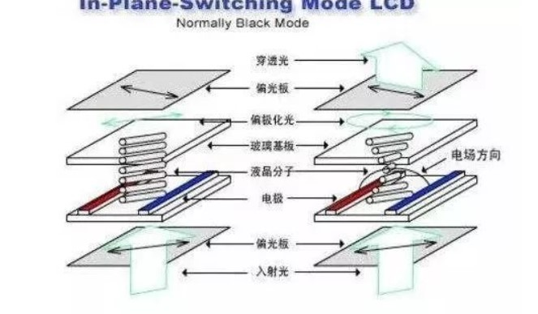
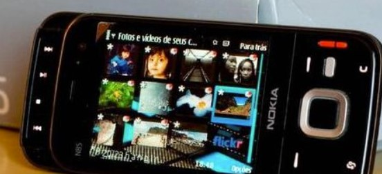
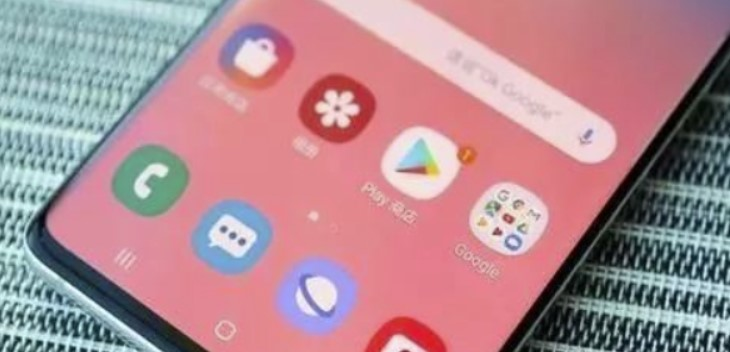
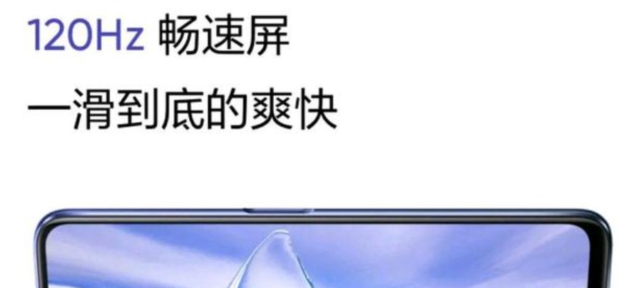

屏 幕
-
LCD屏幕：统治手机早期屏幕市场的王者
在早期的手机市场中，LCD几乎是王者般的存在，诞生了基于LCD的各种显示技术，
被大众所熟知的主要有TFT、SLCD、IPS以及对比前三者热度不高的ASV技术。
1.TFT
TFT全称为Thin Film Transistor，意思为薄膜晶体管。
在手机发展初期是一项非常成熟的技术，被广泛的应用到各种中高低端的手机中，早期的PC领域也大多采用的是TFT屏幕。
TFT的主要优势在于色彩饱和度完美，色彩还原能力和对比度都不错，并且凭借成熟的技术具备高产量、低价格的优点，因此才被大量采用。
诺基亚在N97（含）以前的手机除了N85、N86以外都是采用的TFT屏幕，彼时的索尼爱立信、三星等手机品牌厂商也基本都是采用的TFT屏幕。

2.Ips
IPS是对TFT屏幕优化升级的一项技术，可以理解为“高级版的TFT”。
对比TFT，IPS技术拥有更大的可视角、相比TFT更省电、屏幕显示通透、触摸无水波纹等优势。
IPS在其他手机品牌中可能应用较少，但是苹果公司在iPhone X以前的全系手机都是采用的IPS屏幕，就是因为其显示通透、色彩还原度高。

3.SLCD
SLCD的全称为Splice Liquid Crystal Display，翻译过来就是拼接专用显示屏，HTC手机上应用的较多。
SLCD除了有LCD的优势之外，还具备使用寿命长、屏幕色调暖等特点。
当年HTC比较火的市场，SLCD也得到了非常良好的市场反馈，因其也衍生出了后续的SLCD 5等技术。
-
OLED屏幕:后来者居上
发展初期的Amoled屏幕
三星公司是最早致力于OLED屏幕研究的厂商，也是现在手机屏幕技术的领导厂商，
其研发出来的产品Amoled屏幕凭借艳丽的色彩显示、高对比度、
流畅的反应速度被应用在各个品牌的高端手机上。
虽然三星是最早研发Amoled屏幕的厂商，但是世界上第一款搭载Amoled屏幕的手机是诺基亚的N85，其后是N86。

Super AMOLED屏幕
第一代的Amloed屏幕虽然非常惊艳，但是总体上还是存在一定缺陷的，因此三星在Super Amoled屏幕上修复了这些缺陷。
比如Amoled屏幕上糟糕的像素排列方式一直被广大网友诟病，
在Super Amoled屏幕中，采用了钻石菱形的像素排列，可以减少屏幕细节上的颗粒感和锯齿感，提供优秀的视觉效果。
Dynamic Amloed
相比于Super Amoled，Dynamic Amloed提供了更多的显示细节，同时支持HDR10+标准，最让用户能直观感受到的便是图像在屏幕上显示的时候，
拥有更多细节展示及暗部细节的丰富程度，使其更贴近生活中的颜色丰富程度。
另外这块屏幕还最高支持1215NT的亮度，户外强光下也能清晰显示。

-
屏幕刷新率提高，游戏反应更迅速
以往的手机基本都是60HZ的刷新率，用户平常使用过程中倒也并没有感觉有何不同。
随着近几年游戏手机概念的引入，屏幕刷新率也得到了革新，先是一加7Pro加入90hz高刷新率，
其后小米11支持到了120刷新率，也提供了90HZ刷新率的流体屏，而最近的拯救者3也支持到了165刷新率，
可见未来手机屏幕刷新率也将成为一项手机的考核标准。
